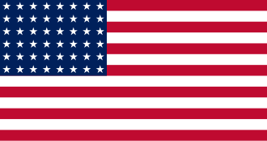
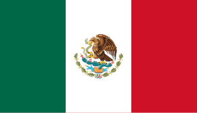

|
|
Paises sedes |
Canadá, Estados Unidos e México.A Copa do Mundo FIFA 2026 será realizada em três países: México, Canadá e Estados Unidos. Esta será a primeira vez na história que a competição acontecerá em três nações diferentes ao mesmo tempo. A escolha dos países-sede foi feita pela FIFA com o objetivo de aproveitar a infraestrutura moderna da América do Norte e proporcionar uma experiência única para jogadores, torcedores e visitantes de todo o mundo. O jogo de abertura acontecerá no México, país que possui uma longa tradição no futebol e que já sediou as Copas do Mundo de 1970 e 1986. Com isso, os mexicanos se tornarão os primeiros a receber partidas de três edições diferentes do torneio. A expectativa é que milhares de torcedores compareçam ao estádio para acompanhar o início da maior competição de futebol do planeta. O Canadá também terá papel importante na organização do evento. Diversas cidades canadenses receberão partidas da fase de grupos e das fases eliminatórias, permitindo que o país mostre sua estrutura esportiva e turística para milhões de pessoas. Será uma oportunidade para ampliar ainda mais a popularidade do futebol entre os canadenses. Os Estados Unidos serão o país com o maior número de cidades-sede e jogos. Além disso, a grande final da Copa do Mundo será disputada em território norte-americano. O país possui alguns dos estádios mais modernos do mundo e uma ampla rede de transporte, fatores que facilitarão a realização de um evento desta magnitude. Outra novidade importante será o aumento do número de seleções participantes. Pela primeira vez, a Copa contará com 48 equipes, em vez das 32 que disputaram as edições anteriores. Essa mudança permitirá que mais países participem do torneio, tornando a competição ainda mais diversa e emocionante. Com mais seleções, o número de partidas também aumentará significativamente. Os torcedores terão mais jogos para acompanhar e poderão conhecer novas equipes, jogadores e estilos de futebol. A expectativa é de que a Copa de 2026 estabeleça novos recordes de público nos estádios, audiência na televisão e movimentação econômica. Além do espetáculo esportivo, a competição promoverá o encontro de diferentes culturas. Milhões de visitantes viajarão entre México, Canadá e Estados Unidos para acompanhar suas seleções, transformando a Copa do Mundo em uma grande celebração internacional. A união entre esporte, cultura e tecnologia promete fazer desta edição uma das mais memoráveis da história. |
|
 |
 |
Voltar |
|||
| Todos os direitos reservados. | |||